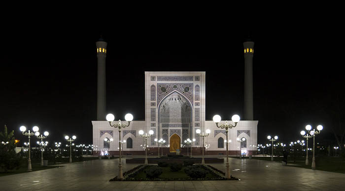

الجوامع
ko'k gumbaz masjidi
minor masjidi
ko'kcha masjidi
أوزبكستان
مساجد في
Hello, welcome to the Mosque site, where you can find information about mosques in Uzbekistan!
Information about mosques
44
Ko'k Gumbaz masjidi
Koʻk gumbaz masjidi - Qarshidagi meʼmoriy yodgorlik (16-asr). Shahar tashqarisiga quriladigan namozgoh turidagi chortoq tarhli xonaqoh-ayvonli inshoot. Peshtoq kitobasidagi yozuvda Abdullaxon II nomi va 999 hijriy (1590—91 mil.) yil saqlangan. Masjid (38,25x19,0 m) yon ayvonlari 14,0x14,6 m, uch qismdan iborat.

99
Minor masjidi
Masjidning qurilish ishlari 2013-yil yoz oylarida boshlangan. 2014-yilning 1-oktyabrida, musulmonlarning katta Qurbon hayiti bayramida O'zbekiston Prezidenti Islom Karimov yangi Minor masjidini ochib berdi.
77
Ko'kcha masjidi
Shayx Zayniddin 1164 yilda tug‘ilgan. U o‘z hayotini zamonaviy O‘zbekiston hududida so‘fiylik tariqatining suhravardiya yo‘nalishi asoschisi – Shahobiddin Suhravardiy taʼlimotini targ‘ib qilishga bag‘ishlagan. Shayx maqbarasi XIV asr oxirida Amir Temurning buyrug‘iga binoan qurilgan.